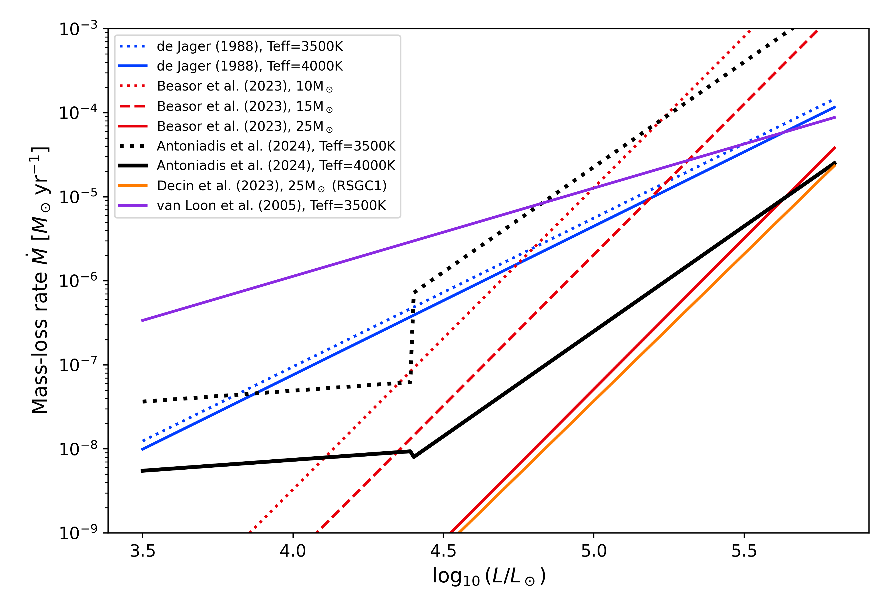
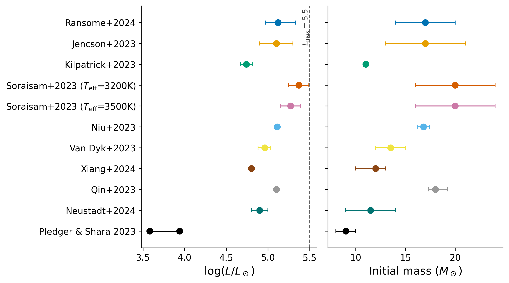

同じ光度でも、恒星風の見積もりは違う
赤色超巨星は、大質量星の外層が大きく膨らみ、表面が冷えた段階だ。表面付近では対流が盛んで、大気からガスや塵が周囲へ流れ出す。恒星進化の計算では、星の光度や有効温度などから単位時間に失う質量を与える式を使う。その式の選び方で、中心核が崩壊するときにどれだけ水素の外層が残るかも変わり得る。
赤外線で見える塵からガスを含む総量を推定するには、塵とガスの比などを仮定する。電波で一酸化炭素を測る方法にも、ガスの組成や流れのモデルが要る。総説では、従来の処方の一つが、星団内の赤色超巨星の観測から推定された放出率を、比較した範囲で最大約30倍上回ると紹介している。差の大きさは、比較した処方と標本に依存する。


図を選ぶと原寸画像を開けます。
爆発が照らす、星のすぐ外側
赤色超巨星の中には、質量放出の跡が塊や弧として残り、方向によっても濃さが違うものがある。超新星が起きた直後のスペクトルに細い輝線が一時的に見える場合、その一つの解釈は、爆発の光が近傍にあったガスを電離させたというものだ。そこから求める放出率はガスの速度や形状にも依存し、赤色超巨星期全体の平均とは時間尺度が違う。
SN 2023ixfでは、爆発直後の観測が密な星周物質を示唆する一方、爆発前の長い赤外線記録に明るい突発増光は見つかっていない。濃いガスの存在から、明るい噴出がいつ起きたかまでを特定するのは難しい。
重い前駆星はどこにいるのか
II-P型超新星の爆発前画像では、初期質量が太陽の約17～18倍を超える赤色超巨星が少ないように見える。一方、単独星の進化モデルには、条件によってさらに重い星が赤色超巨星の姿で爆発すると予測するものがある。これが「赤色超巨星問題」と呼ばれるずれだ。塵に隠れた星は発見しにくく、限られた波長から星の全光度を求める補正や、光度から質量に換算する進化モデルにも不確かさがある。


図を選ぶと原寸画像を開けます。
総説は、赤外線を含めて光度を見直し、推定誤差も織り込むと、重い前駆星の不足の統計的な証拠は弱まると論じる。標本の小ささや検出条件の違いを踏まえ、どの質量まで赤色超巨星として爆発するかは、引き続き観測で調べるべき問題として残る。